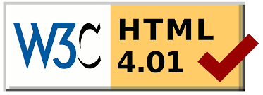

A little bit about Matt Hall...
My digital journey
Freelance front-end developer (Age 15)
I taught myself HTML4 and CSS2 and freelanced as a front-end web developer.
Co-founded a web theme start-up (Age 17)
I led development (PSD to vBulletin) for a client base of more than 100 before I sold my share to attend University.
A grade in MITx programming (Age 24)

I achieved an A grade in the MITx Introduction to CS & Programming MOOC.
Strategist at leading digital innovation agency (Age 26)
I worked as a digital strategist on projects for world-class brands including Michelin, Sony, DHL and Unilever.
My interesting fact
I have been in 18 different countries in the past 16 months. My favourite 3 are Brazil, Colombia and Japan.
Why I want to program
- Make an impact - I want to create things that make a positive impact on the world.
- Intellectually stimulating - I enjoy the challenging nature of programming.
- Future Proof - I believe coding will be a core skill needed to make an impact in the future.
Why F&C is a good fit
- The learning style - I have enjoyed the collaborative learning style at meetups.
- Live abroad - Great opportunity to learn in a new culture.
- Great curriculum - Comprehensive curriculum which has received many positive reviews.
What I bring
- Hard work & drive - Genuine commitment to learning how to program.
- Existing knowledge - Good knowledge of HTML/CSS.
- Good character - Positive and optimistic. I am conscious of making a positive contribution to my environment.